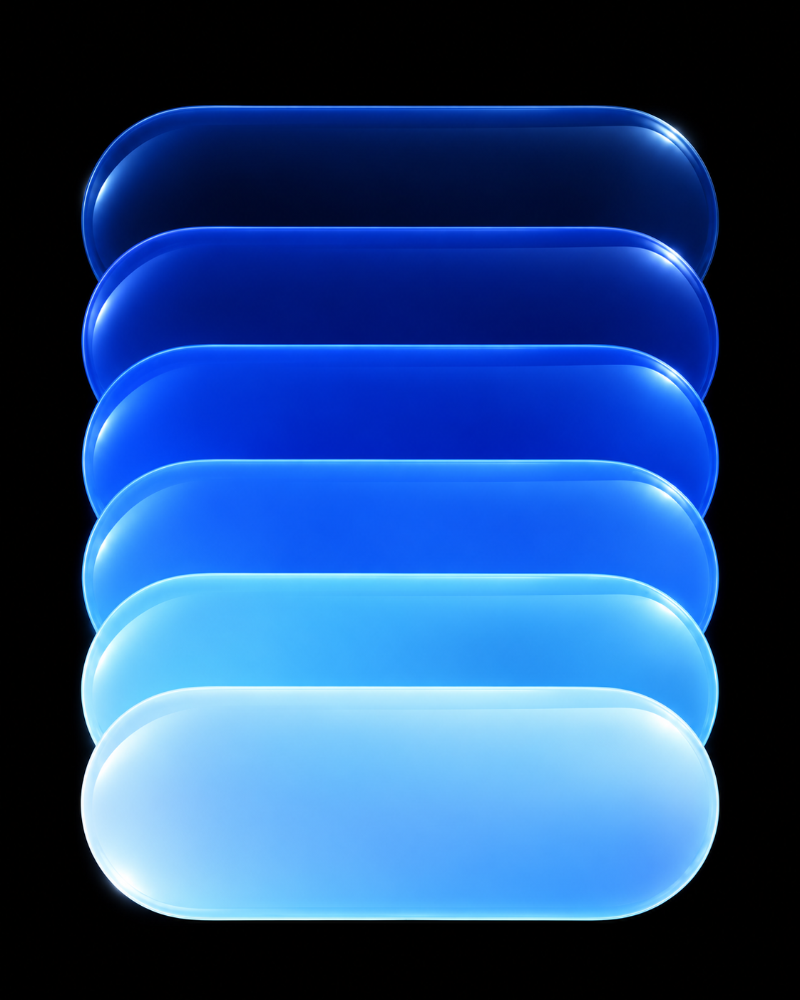
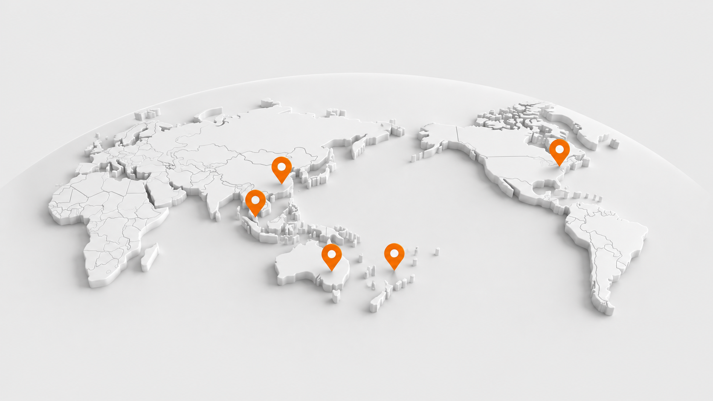

연하의 레퍼런스 · MATERIAL STUDY 01
원본의 색, 빛, 깊이를
함께 맞춥니다.
원본을 크게 비교하고, 색상 칩을 눌러 바꿔 보세요. 유리의 얇은 반사선부터 지도 높이·종이 여백까지 각각 살펴봅니다.
09원본 유형02AI 재질 시안3화면 비율
🎬 영상 효과·자막·음성 조합
10개 프리셋과 효과음 30개를 페이지 안에서 비교하고, 고른 조합을 Claude에 전달하세요.
REF-05
파란 유리 6단
원본 세부 보기
원본 그림을 클릭하면 좌표와 5×5px 중앙값이 표시됩니다.
설정은 이 브라우저에 자동 저장됩니다. JSON 파일로 다른 컴퓨터에 옮길 수 있습니다.
EDIT PREVIEW
큰 화면에서 열기 ↗영상·소리를 직접 비교하고 조합하기
REFERENCE BREAKDOWN
분석 문서 ↗작은 여백부터, 재질을 만드는 순서까지
원본 관찰픽셀 실측🌸 재현 제안스크린샷에서 광원·재질의 원래 설정값을 역산할 수는 없습니다. 구현값은 따로 표시합니다.
레이어를 쌓는 순서
그라데이션 레시피
구도 · 작은 간격
원본 좌표·실측 색·가로/세로 배치 수치 전체
GENERATED MATERIAL STUDIES
사용자 원본과 별도 보관🌸 이번에 생성한 재질 시안
유리의 광택과 흰 지도 모형의 깊이를 확인하는 이미지입니다. 아래 이미지는 위쪽 편집기의 개별 레이어가 합쳐진 결과와는 별개입니다.

파란 유리 6단
PNG ↓좁은 밝은 테두리 · 짙은 내부색 · 모서리 반사


흰 양각 지도
PNG ↓지형은 원자료로 확인하고 사용하는 재질 시안

NEXT EDIT
선택한 설정 그대로 전달하기
위에서 색과 여백을 맞춘 후 현재 설정 프롬프트 복사를 누르세요. 레퍼런스 주소, 색 역할, 그라데이션 지점, 여백, 화면 비율과 적용 순서가 함께 들어갑니다.
🌸 지도·종이처럼 원본 이미지가 포함된 시안은 이미지 안의 각 부분을 독립적으로 다시 칠하지 않습니다. 편집 가능한 항목만 표시합니다. 완성 MP4 수정은 실제 편집 프로젝트에서 이어집니다.